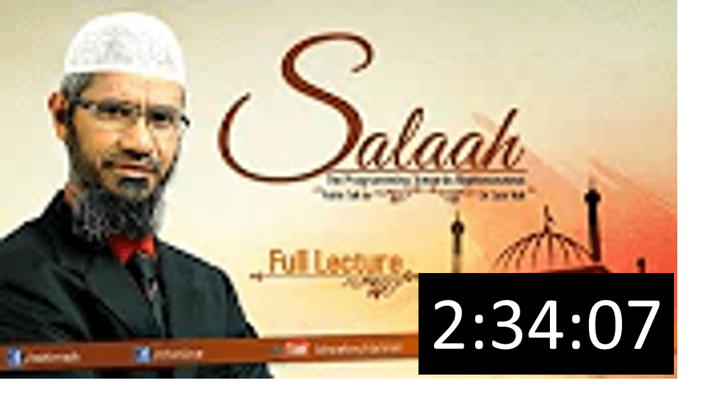

Home
LECTURES
Lectuers
dr zakir naik
Debates
Popular Lectures
Ramadan Talk
Dr. Zakir Naik
DEBATES
DEBATE : THE QUR'AN AND THE BIBLE IN THE LIGHT OF SCIENCE | TALK + REBUTTAL + Q & A
THE CONCEPT OF GOD IN HINDUISM AND ISLAM IN THE LIGHT OF SACRED SCRIPTURES WITH SRI SRI RAVI S
DEBATE : WAS CHRIST (PBUH) REALLY CRUCIFIED? | TALK + REBUTTAL
DEBATE : WAS CHRIST (PBUH) REALLY CRUCIFIED? | QUESTION & ANSWER
IS NON - VEGETARIAN FOOD PERMITTED OR PROHIBITED FOR A HUMAN - BEING? | LEC + Q & A
POPULAR LECTURES
QUR'AN AND MODERN SCIENCE COMPATIBLE OR INCOMPATIBLE | LECTURE + Q & A
SIMILARITIES BETWEEN HINDUISM AND ISLAM | CHENNAI | LECTURE
SIMILARITIES BETWEEN HINDUISM AND ISLAM | CHENNAI | QUESTION & ANSWER
SIMILARITIES BETWEEN CHRISTIANITY AND ISLAM | LECTURE + Q & A | DR ZAKIR NAIK
MUHAMMED (PBUH) IN THE VARIOUS WORLD SCRIPTURES | LECTURE
MUHAMMED (PBUH) IN THE VARIOUS WORLD SCRIPTURES | QUESTION & ANSWER
IS THE QUR'AN GOD'S WORD? | LECTURE
IS THE QUR'AN GOD'S WORD? | QUESTION & ANSWER
ISLAM'S VIEW ON TERRORISM AND JIHAAD | LECTURE + Q & A | DR ZAKIR NAIK
AL QUR'AN - SHOULD IT BE READ WITH UNDERSTANDING? | LECTURE
AL QUR'AN - SHOULD IT BE READ WITH UNDERSTANDING? | QUESTION & ANSWER
WHAT IS THE PURPOSE OF OUR LIFE? | LECTURE
WHAT IS THE PURPOSE OF OUR LIFE? | | QUESTION & ANSWER
THE PURPOSE OF CREATION | LECTURE
THE PURPOSE OF CREATION | QUESTION AND ANSWER
The Importance of Unity in the Muslim Ummah (Part 1)
The Importance of Unity in the Muslim Ummah (Part 2)
Is Islam the Solution for Humanity? Full Lecture with Q&A
IF THE LABEL SHOWS YOUR INTENT, WEAR IT! | LECTURE + Q & A
DA'WAH OR DESTRUCTION? | LECTURE
DA'WAH OR DESTRUCTION? | QUESTION & ANSWER
MISCONCEPTIONS ABOUT ISLAM | DUBAI PART 1 | LECTURE + Q & A
MISCONCEPTIONS ABOUT ISLAM - DUBAI PART 2 | LECTURE + Q & A
ISLAM AND THE 21ST CENTURY - DR ZAKIR NAIK'S PUBLIC LECTURE
ISLAM AND THE 21ST CENTURY - DR ZAKIR NAIK'S PUBLIC Lecture| QUESTION & ANSWER
WOMEN'S RIGHTS IN ISLAM - LIBERATED OR SUBJUGATED? | LECTURE
WOMEN'S RIGHTS IN ISLAM - LIBERATED OR SUBJUGATED? QUESTION & ANSWER
SYMPOSIUM : ''FAMILY VALUES IN ISLAM'' | LECTURE + Q & A
MEDIA AND MUSLIMS | LECTURE + Q & A
Islamophobia — Dr Zakir Naik & The Impact of the Glorious Quran on Our Lives – Fariq Naik
THE ROLE OF MUSLIMS IN A NON-MUSLIM SOCIETY | LECTURE + Q & A
PEACE VISION OF ISLAM | LECTURE + Q & A

SALAAH - THE PROGRAMMING TOWARDS RIGHTEOUSNESS | LECTURE + Q & A
SEEKING KNOWLEDGE IN THE LIGHT OF ISLAM | LECTURE + Q&A
UNIVERSAL BROTHERHOOD | LECTURE + Q&A | DR ZAKIR NAIK
Why the West is Coming To Islam? Part 1
Why the West is Coming To Islam? by Dr Zakir Naik | Part 2
Is Terrorism a Muslim Monopoly? | LECTURE + Q&A
T.V. TALK SHOW - AN ANALYSIS | LECTURE + Q & A
RAMADAN TALK
RAMADHAAN - A DATE WITH DR ZAKIR : EPISODE - 01
RAMADHAAN - A DATE WITH DR ZAKIR : EPISODE - 02
RAMADHAAN - A DATE WITH DR ZAKIR : EPISODE - 03
RAMADHAAN - A DATE WITH DR ZAKIR : EPISODE - 04
RAMADHAAN - A DATE WITH DR ZAKIR : EPISODE - 05
RAMADHAAN - A DATE WITH DR ZAKIR : EPISODE - 06
RAMADHAAN - A DATE WITH DR ZAKIR : EPISODE - 07
RAMADHAAN - A DATE WITH DR ZAKIR : EPISODE - 08
RAMADHAAN - A DATE WITH DR ZAKIR : EPISODE - 09
RAMADHAAN - A DATE WITH DR ZAKIR : EPISODE - 10
RAMADHAAN - A DATE WITH DR ZAKIR : EPISODE - 11
RAMADHAAN - A DATE WITH DR ZAKIR : EPISODE - 12
RAMADHAAN - A DATE WITH DR ZAKIR : EPISODE - 13
RAMADHAAN - A DATE WITH DR ZAKIR : EPISODE - 14
RAMADHAAN - A DATE WITH DR ZAKIR : EPISODE - 15
RAMADHAAN - A DATE WITH DR ZAKIR : EPISODE - 16
RAMADHAAN - A DATE WITH DR ZAKIR : EPISODE - 17
RAMADHAAN - A DATE WITH DR ZAKIR : EPISODE - 18
RAMADHAAN - A DATE WITH DR ZAKIR : EPISODE - 19
RAMADHAAN - A DATE WITH DR ZAKIR : EPISODE - 20
RAMADHAAN - A DATE WITH DR ZAKIR : EPISODE - 21
RAMADHAAN - A DATE WITH DR ZAKIR : EPISODE - 22
RAMADHAAN - A DATE WITH DR ZAKIR : EPISODE - 23
RAMADHAAN - A DATE WITH DR ZAKIR : EPISODE - 24
RAMADHAAN - A DATE WITH DR ZAKIR : EPISODE - 25
RAMADHAAN - A DATE WITH DR ZAKIR : EPISODE - 26
RAMADHAAN - A DATE WITH DR ZAKIR : EPISODE - 27
RAMADHAAN - A DATE WITH DR ZAKIR : EPISODE - 28
RAMADHAAN - A DATE WITH DR ZAKIR : EPISODE - 29
RAMADHAAN - A DATE WITH DR ZAKIR : EPISODE - 30
RAMADHAAN - A DATE WITH DR ZAKIR : EPISODE - 31